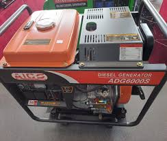
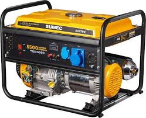
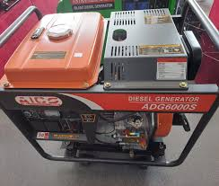
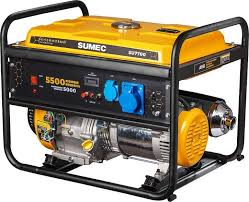

Perkins is the world's leading brand in selling generators. The company has a long history of manufacturing quality engines. They have a global presence with thousands of stores in every region of the world to ensure their customers receive the best service. That's not all, their sales record over the years and the excellent reviews and safety ratings they have achieved speak volumes about the quality and performance of their generators.
The Perkins brand is not left behind outside Kenya. Perkins Kenya generators are popular with people with moderate to high power needs. The Perkins brand is known for its diversity. They have a wide range of generators from 5kva to 2500kva to meet all needs from simple household use to industrial generators.
Perkins Kenya generators are not without features Impressive when it comes to safety and improved performance. Their generators are known to be quiet when running. They feature a large exhaust system and suppression system that ensures quiet generator operation.
To take full advantage of the power of the Perkins generator, they come with an integrated control system. Integrated and advanced technology allows you to easily monitor the system for outstanding quality. efficiency. To ensure you get a long-lasting product, all Perkins generators are made from high-quality powder-coated steel frames. This frame is highly resistant to corrosion and rust.
So, where can you buy a Perkins generator in Kenya? If you want to experience the power, durability and reliability of a Perkins Kenya generator, look no further. We are a renowned and approved supplier of the Perkins brand. We supply many types of generators and provide you with the best prices. Additionally, we'll be on hand to assist you whenever you need our help or advice about your generator.
0758225198 or 0112733574
Nairobi, Kenya
Cummins is a name synonymous with quality. Since building its first diesel engine in 1919, the Cummins brand has strived for superior quality, and it shows in its products. Cummins generators are also known for their innovation and integration of the latest technology into their designs.
Why choose Cummins generators Kenya
Are you looking to invest in Cummins generators in Kenya? Look no further. We are a reputable supplier of genuine Cummins generators. We provide our customers with exceptional customer support to accompany our products. All Cummins generators and other brands we carry are backed by a warranty so you can have peace of mind when you need it and focus on what's important.
0758225198 or 0112733574
Nairobi, Kenya
 



A diesel generator uses a combination of a diesel generator with an electric motor to produce electricity. Generators can be fueled using natural gas, biofuel, gasoline, or diesel. Of all these types, diesel generators are the most common in Kenya and beyond. If you are searching for a generator for sale in Kenya, you might have found out that most are diesel generators.
There are many reasons why diesel generators are the most preferred. First is that they are able to run continuously for days on end without any problems. You only need to ensure that there is enough fuel to keep the generator running for the required duration. Diesel generators can stay on for hours, a day to even over a week without any problems. As such they are more versatile and can be used as backups and also as primary sources of electricity.
Another reason you will find many diesel generators for sale in Kenya is because of their power. Diesel generators are the most powerful and are made for use in instances where a lot of power is required. For this reason, the big industrial generators are diesel fueled.
Because of their widespread use, there are many technicians with the required expertise to install, service, and maintain diesel generators in Kenya. Further, diesel generators are more fuel efficient than other types of generators. For combustion, air has to mix with fuel in the engine cylinders. However, unlike in other engines, here the air is compressed first before mixing with the diesel ensuring efficiency.
There are many other advantages of investing in a diesel generator. If you are in need of quality diesel generators for sale in Kenya, then we can help you get the best for your needs. We have a wide variety of quality brands like Honda with great diesel engines for durability, efficiency, smooth operation, and power.
0758225198 or 0112733574
Nairobi, Kenya